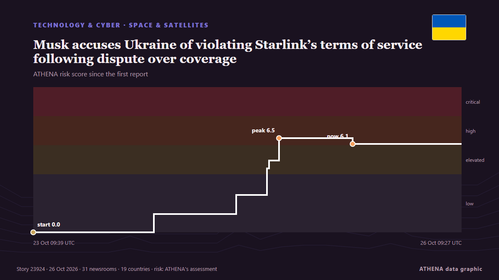

Musk accuses Ukraine of violating Starlink’s terms of service following dispute over coverage

SpaceX CEO Elon Musk has accused Ukraine’s military of violating Starlink’s terms of service, after Kyiv said that access to the service had been restored. من Egypt Independent
نشرته بشكل مستقل 31 مصدرًا في 19 دولة منذ 23 أكتوبر، وأول من نشره Indian Express؛ والتغطية في ذروتها. يقدّر ATHENA الخطر بأنه مرتفع (6.0/10)، ويعود ذلك أساسًا إلى خطورة الضرر الموصوف ونطاقه الجغرافي والقطاعي. الثقة 87٪ (مرتفعة)، وعدد المصادر المستقلة المؤكِّدة: 31، بمتوسط موثوقية للمصادر يبلغ 76٪. من نقل الخبر: 8 وسائل إعلام في الهند · India, 5 وسائل إعلام في الولايات المتحدة · United States, 4 وسائل إعلام في أوكرانيا · Ukraine. امتدت التغطية من 23 أكتوبر إلى 26 أكتوبر، على مدى 72 ساعة.
لماذا يهم: بدأ الغزو الروسي الشامل لأوكرانيا في فبراير 2022. تتابع هذه الصفحة المعارك والضربات على البنية التحتية والدبلوماسية المحيطة بالحرب كما تغطيها وسائل الإعلام حول العالم.
ما الذي تغيّر: 17 تقارير جديدة من 15 غرف أخبار خلال 24 ساعة حتى 26 أكتوبر.
العنوان الأول: Ukraine disputes Musk's claim that its military violated Starlink's terms of service
تُعرض العناوين بالإنجليزية كما نُشرت.
نظرة سريعة
اختير وقُيِّم وكُتب وفق منهجية ATHENA المنشورة. لا يتدخل أي محرر في الأحداث بعينها. كيف يُنتَج ›
| 23 Oct 09:37 UTC | 1 |
|---|---|
| 23 Oct 12:37 UTC | 0 |
| 23 Oct 15:37 UTC | 0 |
| 23 Oct 18:37 UTC | 0 |
| 23 Oct 21:37 UTC | 0 |
| 24 Oct 00:37 UTC | 0 |
| 24 Oct 03:37 UTC | 2 |
| 24 Oct 06:37 UTC | 0 |
| 24 Oct 09:37 UTC | 0 |
| 24 Oct 12:37 UTC | 0 |
| 24 Oct 15:37 UTC | 0 |
| 24 Oct 18:37 UTC | 4 |
| 24 Oct 21:37 UTC | 1 |
| 25 Oct 00:37 UTC | 3 |
| 25 Oct 03:37 UTC | 4 |
| 25 Oct 06:37 UTC | 4 |
| 25 Oct 09:37 UTC | 3 |
| 25 Oct 12:37 UTC | 2 |
| 25 Oct 15:37 UTC | 5 |
| 25 Oct 18:37 UTC | 2 |
| 25 Oct 21:37 UTC | 1 |
| 26 Oct 00:37 UTC | 1 |
| 26 Oct 03:37 UTC | 1 |
| 26 Oct 06:37 UTC | 2 |
| 23 Oct 09:39 UTC | 0.0 |
|---|---|
| 24 Oct 05:51 UTC | 1.2 |
| 24 Oct 19:39 UTC | 2.6 |
| 25 Oct 00:49 UTC | 4.4 |
| 25 Oct 01:12 UTC | 4.9 |
| 25 Oct 02:52 UTC | 6.5 |
| 25 Oct 15:09 UTC | 6.1 |
| 26 Oct 09:27 UTC | 6.0 |
لماذا هذه الأرقام
الأهمية
الخطر
الثقة
التغطية — من نشر الخبر ومتى
العنوان كما نُشر · يفتح الأصل- Indian Express · الهند · IndiaTrump asked Musk to reverse limits on Ukraine’s military internet use
- NDTV · الهند · IndiaUS Asked Musk For Years To Alter Starlink Service In Ukraine, Middle East: Report
- The Jerusalem Post · إسرائيل · IsraelUS has asked Musk to change Starlink services in Ukraine, Middle East for years, fears misuse
- Ukrainska Pravda (English) · أوكرانيا · UkraineMusk says Ukrainian military violated Starlink terms of use, loophole has been closed
- TASS (English) · روسيا · RussiaKiev violated Starlink terms of service, Musk says
- CNA (Channel NewsAsia) · سنغافورة · SingaporeUkraine says Starshield back to normal, Musk says Kyiv violated Starlink terms
- The Independent · المملكة المتحدة · United KingdomElon Musk restricted Ukraine’s Starlink access after military ‘violated’ terms
- The Korea Times · كوريا الجنوبية · South KoreaUkraine says Starshield back to normal; Musk says Kyiv violated terms
- The Hill · الولايات المتحدة · United StatesMusk says he was behind Starlink's slowdown in Ukraine
- Times of India · الهند · India'To kill people': Musk accuses Ukraine military of misusing Starlink for drone strikes
- NDTV · الهند · India'Ukraine Violated Starlink, Used It To Kill People': Elon Musk As Speed Restores
- Anadolu Agency (English) · تركيا · TurkeyDefending restrictions, Elon Musk says use of Starlink for offensive drone strikes never permitted
- Ukrinform (English) · أوكرانيا · UkraineMusk claims Ukraine violated Starlink terms of service, 'Flash' responds
- BBC News · المملكة المتحدة · United KingdomWhy is Ukraine so reliant on Starlink and can Europe plug the gap?
- Kyiv Post · أوكرانيا · UkraineMusk Claims Ukraine Breached Starlink Terms, Kyiv Rebuts
- Asharq Al-Awsat (English) · المملكة العربية السعودية · Saudi ArabiaMusk Accuses Ukraine of Violating Starlink's Terms of Service
- BBC News · المملكة المتحدة · United KingdomMusk says SpaceX restricted Ukraine's Starlink connection as service restored
- Indian Express · الهند · India‘May you burn in hell’: Elon Musk’s message to ‘warmongers’ amid Starlink row
- Punch · نيجيريا · NigeriaMusk accuses Ukraine of violating Starlink’s terms of service
- Khaama Press · أفغانستان · AfghanistanMusk Defends Starlink Restrictions, Says Offensive Drone Strikes Were Never Permitted
- Times of India · الهند · India'Can't use it to kill people': Musk admits restricting Starlink in Ukraine
- NBC News (World) · الولايات المتحدة · United StatesElon Musk says SpaceX closed Ukraine Starlink ‘loophole,’ while Kyiv denies breaching terms
- Times of India · الهند · IndiaUkraine hits back at Musk’s claim over civilian Starlink use for offensive strikes
- PBS NewsHour · الولايات المتحدة · United StatesUkraine disputes Elon Musk's claim that its military violated Starlink's terms of service
- Taipei Times · تايوان · TaiwanMusk accuses Ukraine of violating Starlink’s terms
- Stuff · نيوزيلندا · New ZealandUkraine hits back at Musk's ‘strange’ claim over Starlink use
- ABC News (International) · الولايات المتحدة · United StatesUkraine disputes Musk's claim that its military violated Starlink's terms of service
- CNBC World · الولايات المتحدة · United StatesUkraine disputes Elon Musk’s claim that its military violated Starlink terms during drone operations
- CBC News · كندا · CanadaUkraine says its military did not violate Starlink terms, disputing Elon Musk claim
- Kyiv Independent · أوكرانيا · UkraineUkraine war latest: Starshield operations restored to normal speed, Zelensky confirms as Elon Musk claims Ukraine violated Starlink terms
- MyJoyOnline · غانا · GhanaMusk says SpaceX restricted Ukraine’s Starlink connection as service restored
- APA (English) · أذربيجان · AzerbaijanMusk opposes use of Starlink for offensive operations
- Times of India · الهند · India‘Physically impossible’: Ukraine disputes Musk’s Starlink claim drone strike claim
- IOL · جنوب أفريقيا · South AfricaElon Musk accuses Ukraine of violating Starlink's terms of service
- AzerNews · أذربيجان · AzerbaijanMusk says Ukrainian military would collapse without Starlink
- Egypt Independent · مصر · EgyptMusk accuses Ukraine of violating Starlink’s terms of service following dispute over coverage